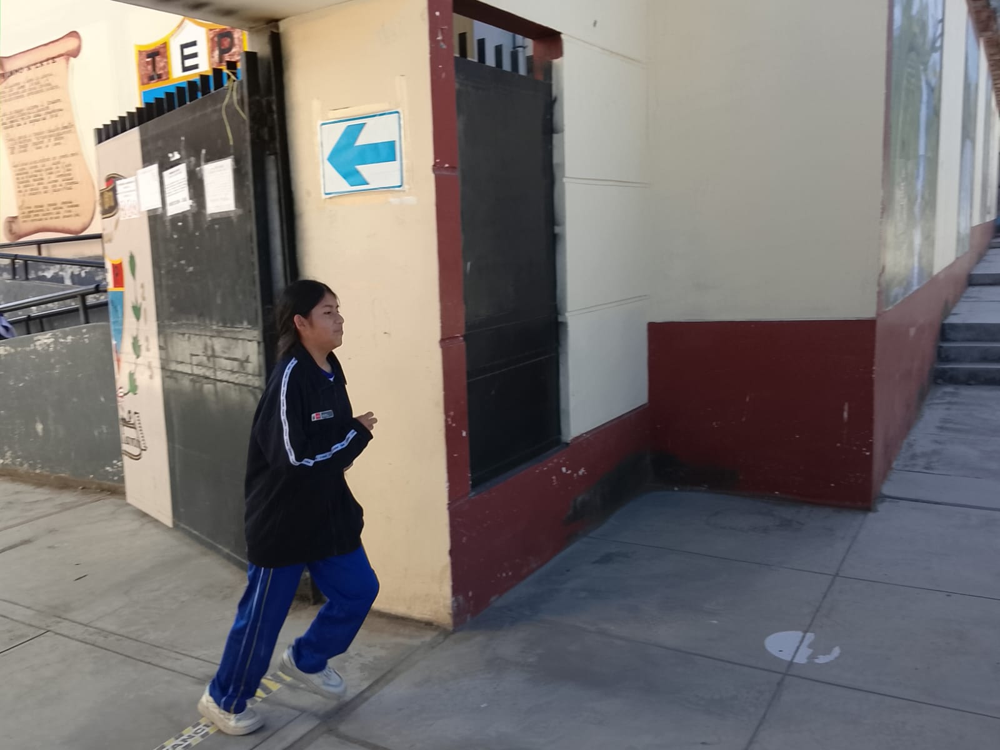
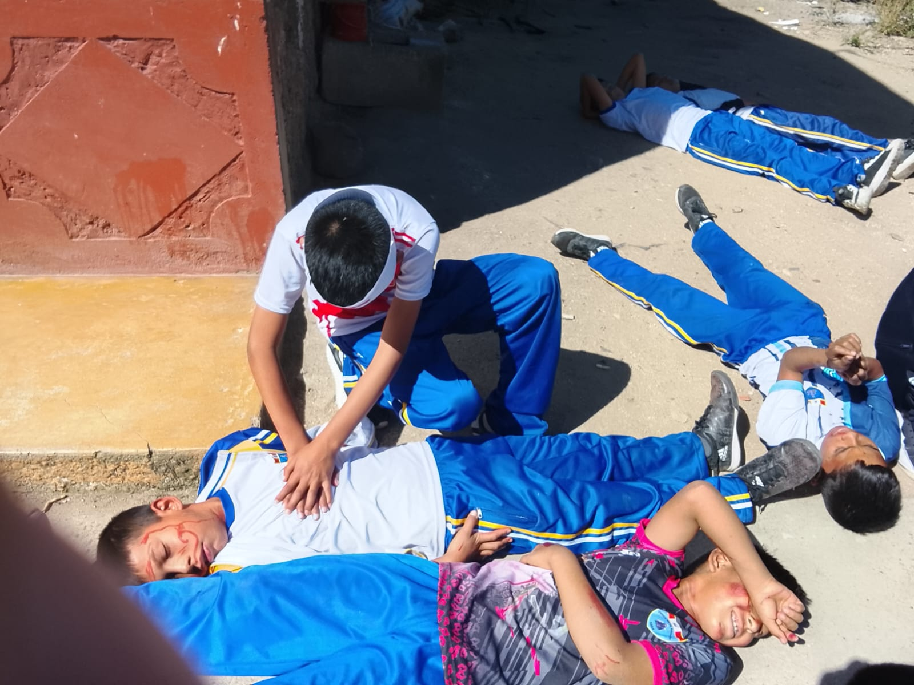
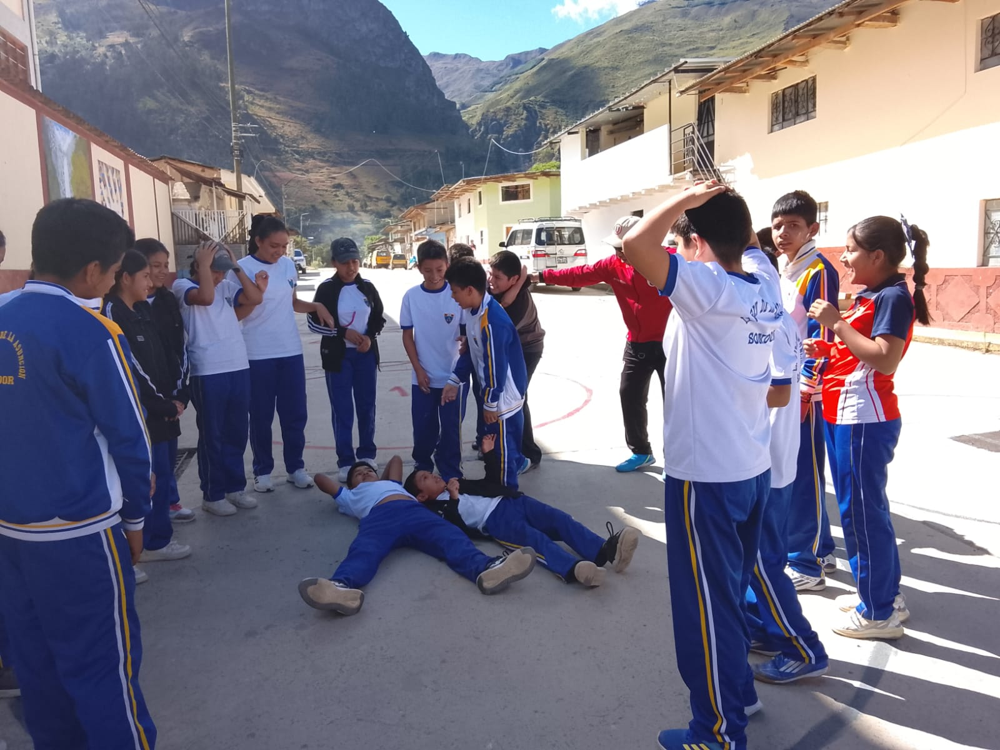
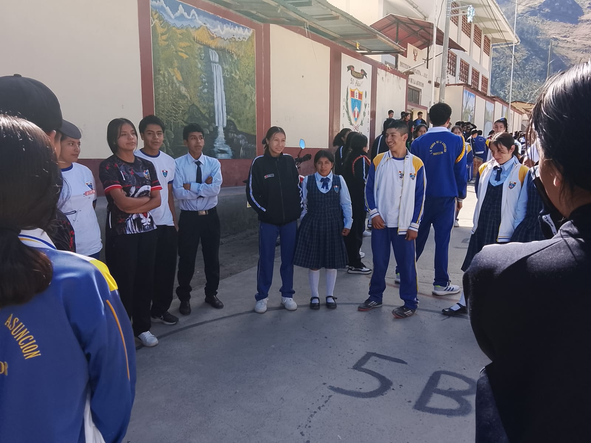
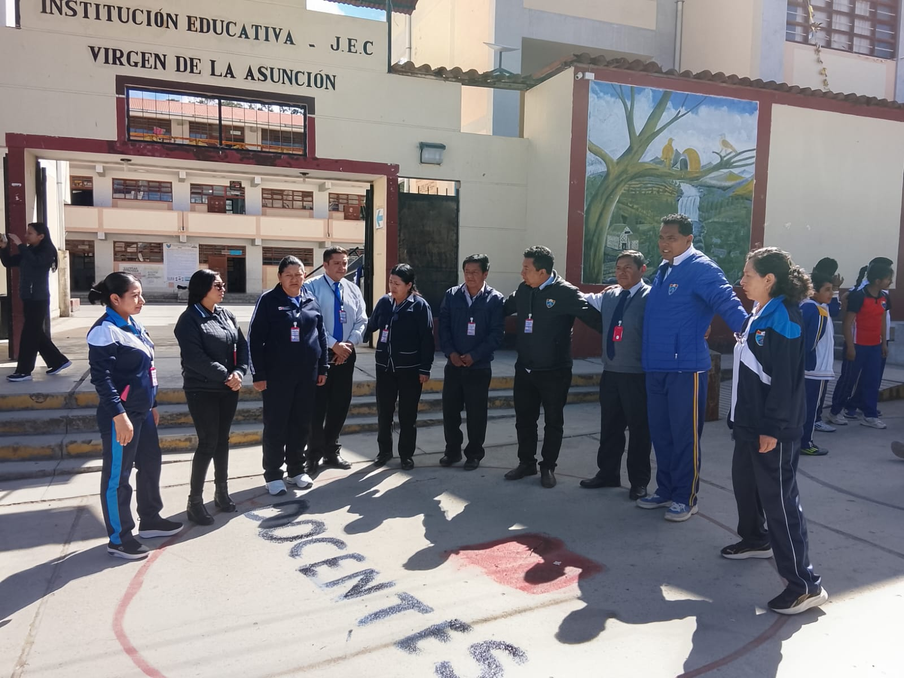
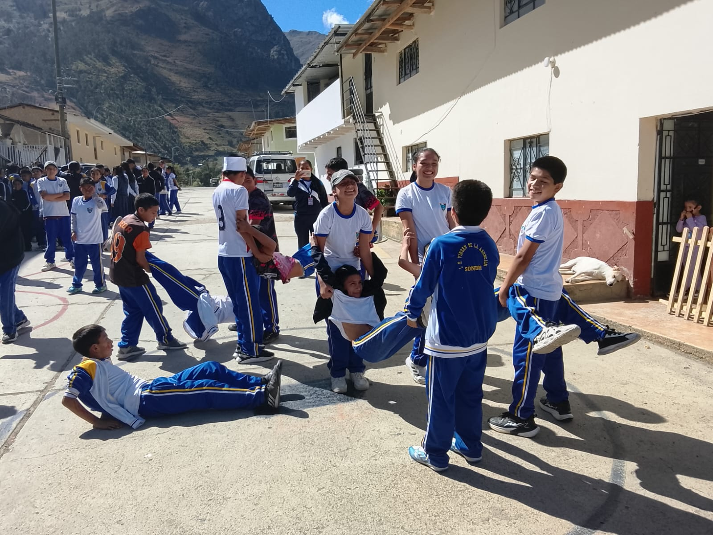

Minedu – Indeci | Gestión del Riesgo de Desastres
El Simulacro Nacional Escolar es una acción pedagógica fundamental promovida por el Ministerio de Educación en coordinación con INDECI. Su finalidad es fortalecer la cultura de prevención y preparar a la comunidad educativa ante un sismo de gran magnitud.
El Minedu establece tres turnos de ejecución: mañana, tarde y noche, asegurando la participación de toda la comunidad educativa.
Antes del evento se planifica la evacuación, se señalizan rutas y se organizan brigadas. Durante el simulacro, los estudiantes se ubican en zonas seguras y luego evacúan ordenadamente. Después, se realiza evaluación y soporte socioemocional.
Este ejercicio permite que los estudiantes comprendan la importancia de la prevención, especialmente en un país sísmico como el Perú, ubicado en el Cinturón de Fuego del Pacífico.





